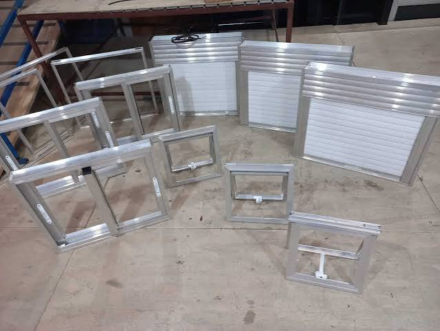
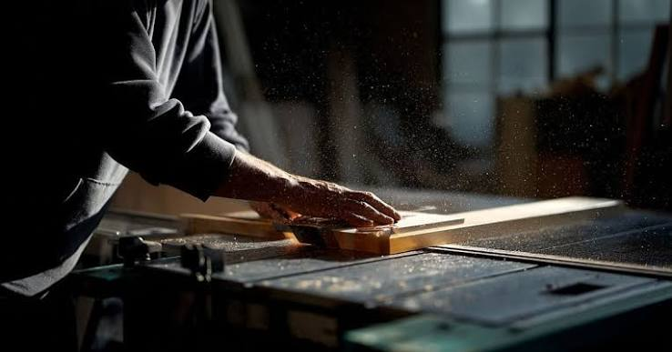
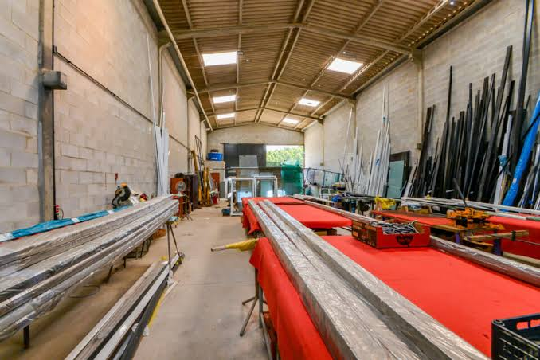
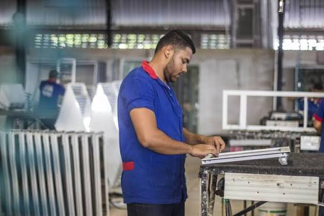

Esquadrias metálicas
Fabricação de estruturas e esquadrias de metal para diferentes aplicações e ambientes.
Fabricação de esquadrias de metal com atenção aos detalhes, acabamento cuidadoso e compromisso com cada projeto.
Atuação voltada à fabricação de esquadrias metálicas, combinando técnica, organização e soluções alinhadas às necessidades de cada cliente.
Fabricação de estruturas e esquadrias de metal para diferentes aplicações e ambientes.
Detalhamento e produção conforme medidas, especificações e requisitos do projeto.
Cuidados nas etapas de preparação, montagem e verificação final das peças.

A 65.146.702 Nilo Quadros Weber é uma empresa de Tubarão, Santa Catarina, dedicada à fabricação de esquadrias de metal. Nosso trabalho valoriza a atenção aos detalhes, a comunicação clara e a busca por soluções funcionais para cada demanda.
Uma rotina de fabricação organizada para acompanhar cada etapa com cuidado e consistência.



Entendemos a necessidade e as informações do projeto.
Alinhamos medidas, materiais, escopo e orçamento.
Executamos as etapas de produção com atenção técnica.
Conferimos o trabalho e combinamos os próximos passos.
Entre em contato para apresentar sua necessidade e solicitar um orçamento.